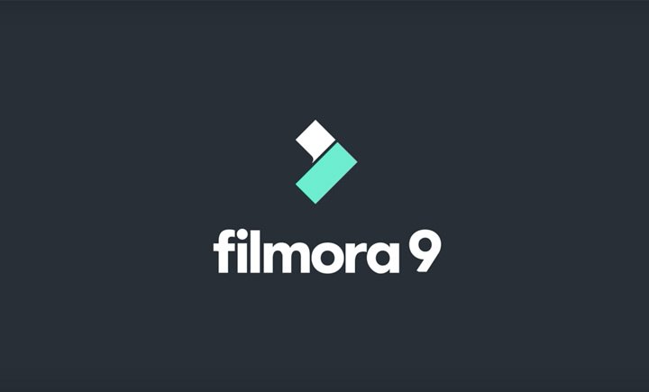
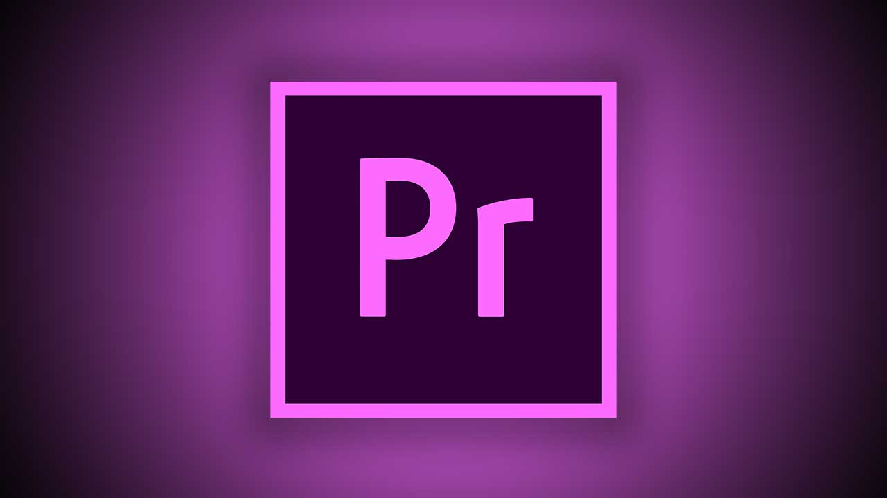

After Effect
Adobe After Effects adalah sebuah software yang sangat profesional untuk kebutuhan Motion Graphic Design.
Click Me!
Vegas Pro
Vegas Pro adalah paket perangkat lunak pengeditan video untuk pengeditan non-linear yang dikembangkan oleh Sony Creative Software.
Click Me!

Filmora
WonderShare Filmora adalah sebuah software atau aplikasi video editor yang dirancang untuk membuat video dengan sederhana dan mudah.
Click Me!

Adobe Premier
Adobe premiere adalah sebuah program editing video yang digunakan oleh rumah-rumah produksi, televisi dan praktisi di bidangnya.
Click Me!